Adam Goode.
I design things for screens, paper and the people on the other side of them.
Hello, I'm Adam.
I've been designing for over 14 years, working across print, websites and digital products.
I like the visual side of design. The details, the type, the bits that make something feel right. But I also like working out why something isn't working, and making it simpler.
These days, I work on digital experiences at the West Brom Building Society. Before that, I worked at Clevercherry as Head of Design, designing a bit of everything.
A few things I've made better.
Not everything I've designed. Just a few things worth talking about.
West Brom — Onboarding, accounts and everyday banking across mobile and desktop.
West Brom — Helping people know what's happening, and what happens next.
I've also worked on projects for clients including Subaru, Ducati, Yale DWS, Peveril Homes, West Midlands Police, and many others.
You've reached the bottom.
Thanks for having a look. If you'd like to talk about a project, a role, or something I've worked on, send me an email.
Designing the new West Brom app.
- Team
- One of three product designers
- Platforms
- Mobile and desktop app
- Focus
- Onboarding, accounts, core servicing, propositions and design system
The challenge
Designing a new digital banking app meant creating more than a collection of screens. The experience needed to feel coherent from a customer's first visit through to everyday account management, while making important personal and financial information easy to understand.
It also needed to work across mobile and desktop. The two experiences had to share the same structure and interaction patterns without just shrinking a desktop interface onto a smaller screen.
My role
I was one of three designers working across the product and contributed to all areas of the app. My main focus included onboarding, account screen design, home screen design, and profile and settings.
I was also a contributer to the design system. This meant moving between the screen work and the design system behind it; spotting repeatable patterns, identifying gaps and contributing components, states and guidance to the design system designer for them to implement and publish.
What I worked on
Onboarding
I worked across five key areas of the customer journey: registration, customer details, product application, identity and verification (ID&V), and account preferences. Together, these formed the onboarding experience, from a customer first registering through to applying for products and setting their account preferences.
Each part came with its own UX challenges. Registration needed to feel quick and straightforward without compromising security, while customer details and product applications involved collecting quite a lot of information without making the process feel overwhelming. ID&V introduced additional complexity, with customers needing to complete the autocapture for an image of their ID and a selfie for security. Account preferences, on the other hand, needed to make it easy for customers to review and manage their information once they were up and running.
A big part of my work was looking at how these journeys fitted together. This meant thinking carefully about the order in which information was requested, what customers needed to know at each stage, and how to reduce unnecessary steps or repetition.
I also spent time considering the less straightforward scenarios, such as what happens when someone enters incorrect information, fails a validation check or needs to return to something later. Clear error messages, helpful guidance, sensible defaults and consistent interaction patterns were all important in making the experience feel coheisive and well put together.
Ultimately, the aim was to make what could be quite complex financial processes feel simple and manageable, giving customers a clear sense of where they were, what was expected of them and what would happen next.
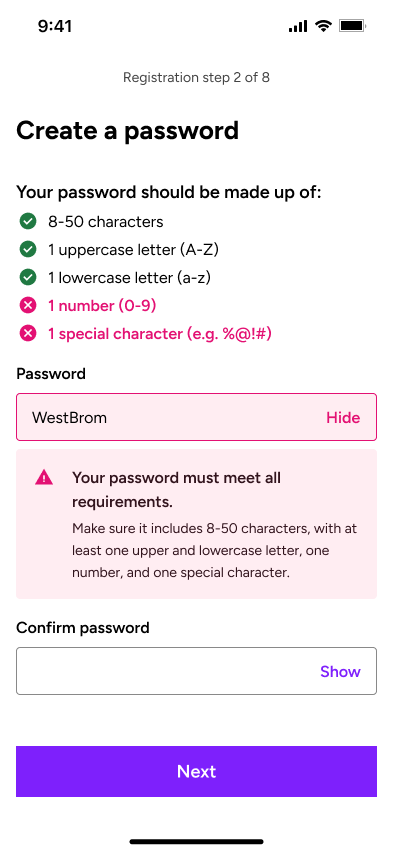
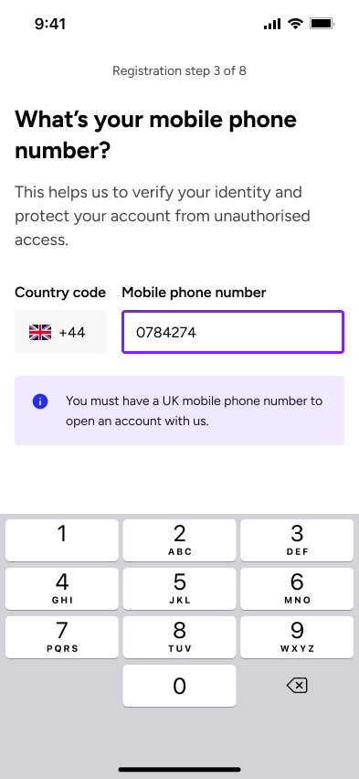

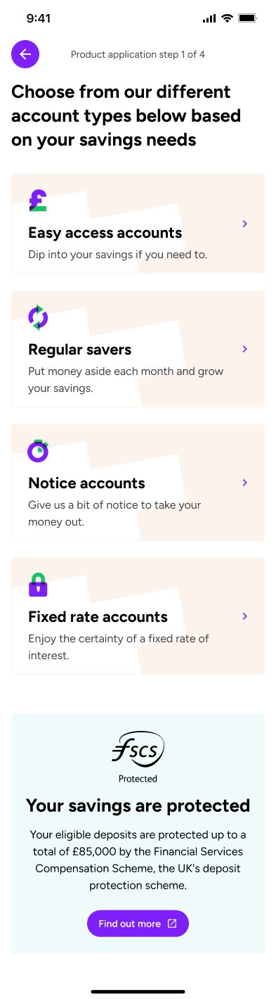
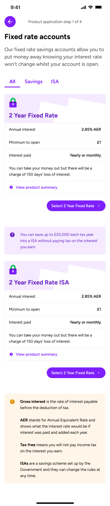
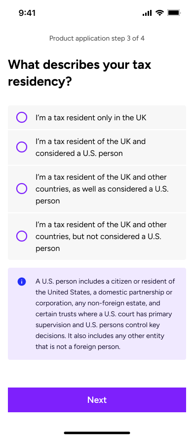
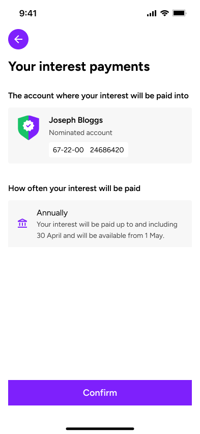
Home and account design
The home screen needed to give customers a useful overview without overwhelming them. I worked on the hierarchy of balances, account information and actions so the most important details could be understood quickly.
Account screens extended that hierarchy into more detailed views. The aim was to keep familiar information and actions in predictable places, creating a consistent route from a high-level overview into individual accounts.
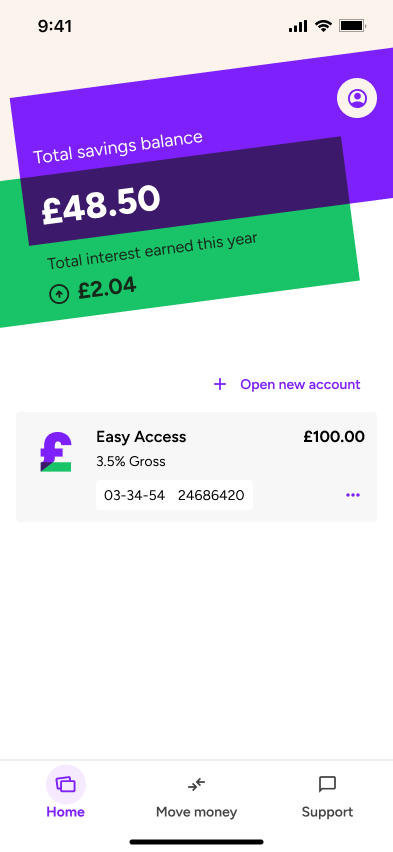
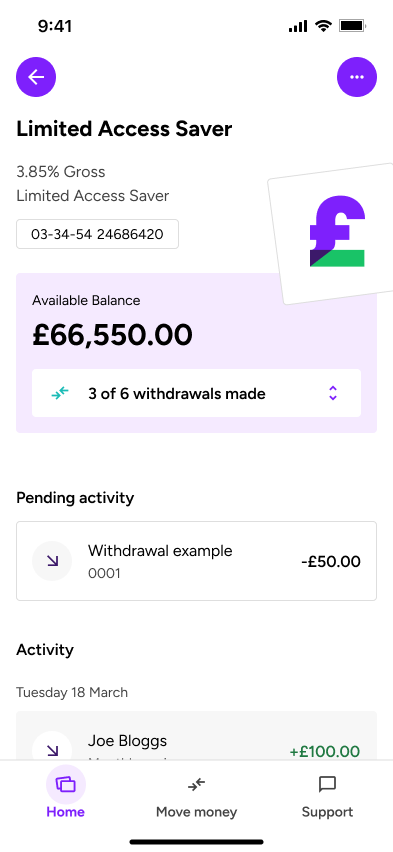
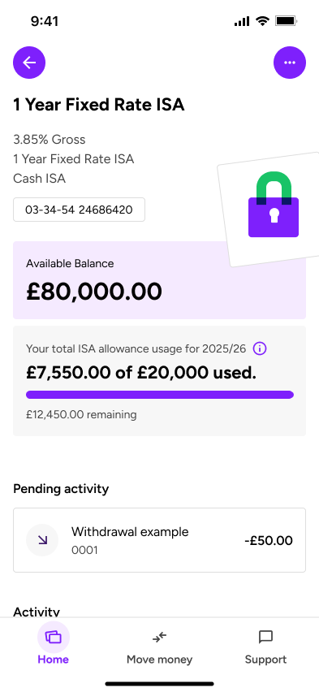
Profile and settings
I worked on the areas of the app that allow customers to view and manage their personal information, account preferences and settings. The main UX challenge was making these features easy to find, understand and use, particularly as some actions were much more important or sensitive than others.
A key focus was on information architecture, making sure settings were grouped logically and labelled in a way that made sense to customers, rather than relying on internal terminology. I also looked at how customers moved between different areas, aiming to reduce unnecessary navigation and make common tasks as straightforward as possible.
For more sensitive actions and important account changes, we introduced biometric authentication to give customers a quick and secure way to verify their identity. Where biometrics hadn't been set up, customers could instead use a one-time passcode (OTP). From a UX perspective, the challenge was balancing security with ease of use, making sure these additional checks felt like a natural part of the journey rather than an unnecessary barrier. Clear instructions, feedback and error handling helped customers understand what was happening and how to move forward.
The overall aim was to create a familiar, predictable experience that gave customers confidence and control over their account, whether they were making a quick change or managing something more important.
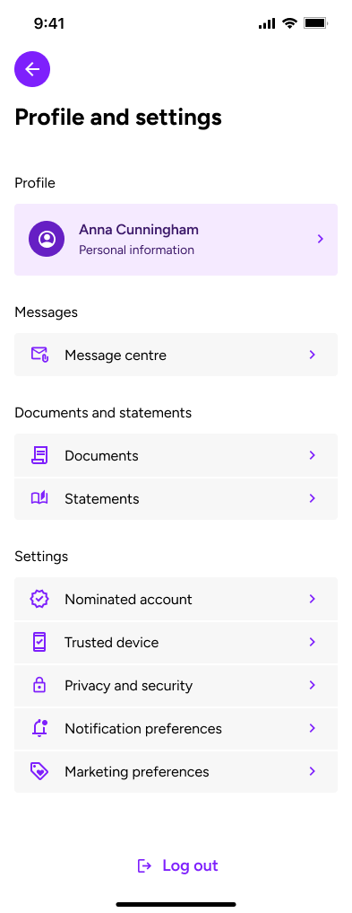
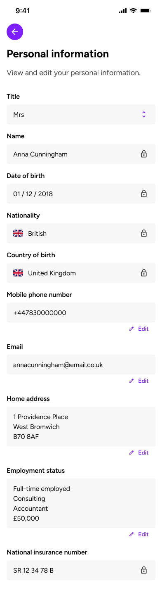
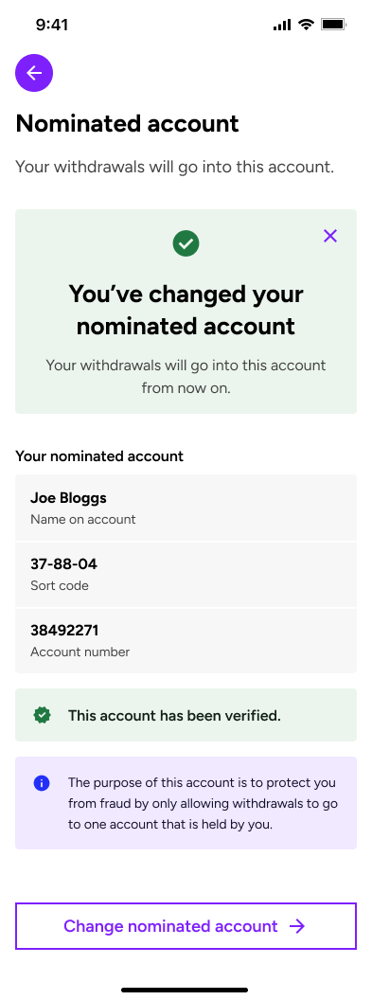
Savings propositions
Alongside the core app, I worked on early proposition concepts including Savings Goals and Deposit Saver, exploring how we could help customers save towards something meaningful rather than simply manage their accounts.
My focus was on bringing these ideas to life through both UX and UI design. I created visually engaging landing screens that introduced each proposition, clearly explained how it worked and helped customers understand the benefits before getting started. It was important to strike the right balance between creating something that looked appealing and making sure the experience was simple, intuitive and easy to use.
I also explored the wider customer journeys across mobile and desktop, looking at how customers would get started, interact with the features and track their progress. This involved thinking carefully about information hierarchy, navigation, visual feedback and how to break down potentially unfamiliar concepts into manageable steps.
The designs helped turn early ideas into tangible experiences that could be shared, discussed and refined, while exploring how thoughtful UX and strong visual design could make saving feel more accessible, engaging and rewarding.
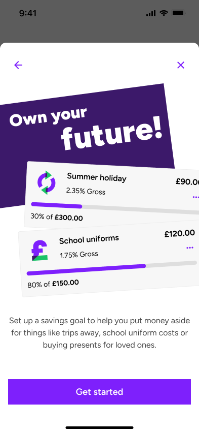
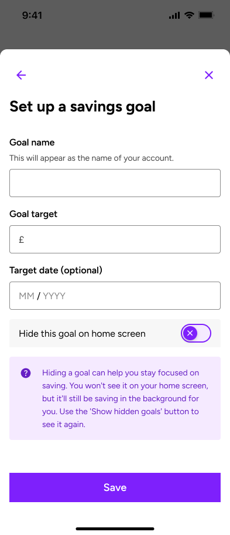
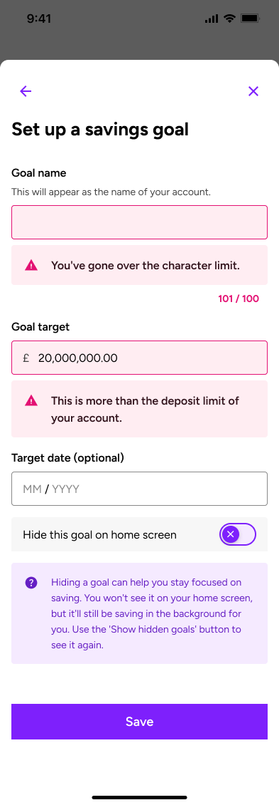
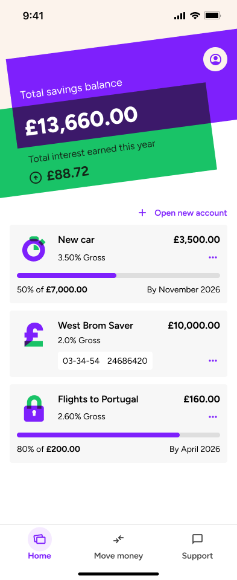
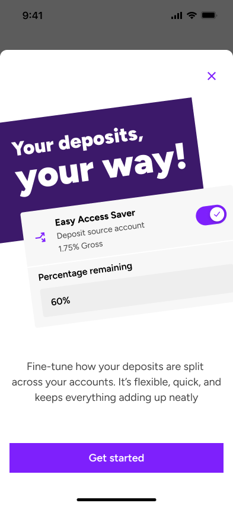
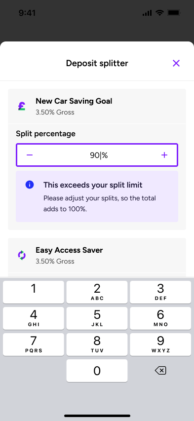
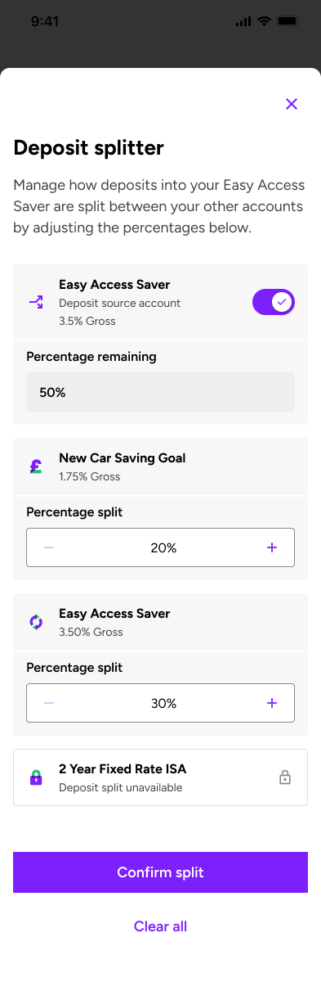
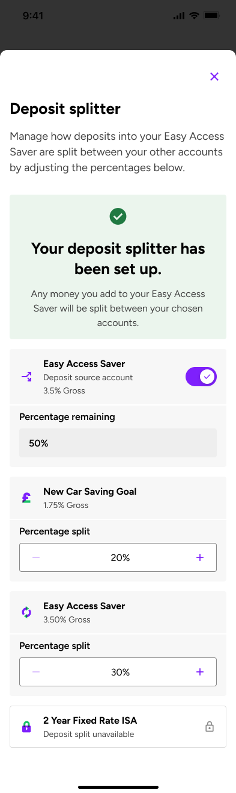
Designing across mobile and desktop
The same customer should not have to relearn the product when moving between devices. I used a shared information architecture, terminology and component language across both versions, then adapted the layout and interaction to suit each screen.
Mobile prioritised touch, focused tasks and a clear reading order. Desktop used the additional space to improve scanning and show related information together. The underlying mental model remained consistent across both.
Building the design system
My design system contribution was closely connected to live product work. When a journey exposed a recurring pattern or a gap in the library, I would consider whether an existing component could be extended or whether a new shared pattern was needed.
I contributed reusable patterns for forms, navigation, account information and feedback, considering interaction states, responsive behaviour, content limits and accessibility. Capturing the intended use; not only the finished component, helped the team apply patterns consistently and reduced one off solutions across the app.
The outcome
Although the app isn't live yet, we've made good progress in simplifying some of the more complex customer journeys, particularly registration, identity verification and product applications. By breaking these processes into smaller, more manageable steps, improving the way information is presented and introducing clearer guidance and error handling, we've aimed to make it easier for customers to complete tasks without confusion or unnecessary friction.
We've also established a more consistent experience across the app, with reusable components and interaction patterns that carry through from onboarding to account management. This includes consistent form behaviours, validation, navigation and security checks, helping customers understand what to expect as they move between different journeys.
Early usability and accessibility testing has shown promising results, particularly in how customers understand and navigate the journeys. The testing is also helping us identify areas where instructions, interactions and accessibility can be improved before launch.
From a UI perspective, I've helped create a cohesive visual language across mobile and desktop, with clearer information hierarchy, consistent layouts and more considered use of typography and spacing. The result is a product that's beginning to feel much more joined up, with UX and UI working together to make everyday banking tasks simpler.
There's still more to learn once the app is live, but the work so far has given us a stronger foundation to build on, with early feedback helping shape the next round of improvements.
← Back to the homepage
Making mortgage progress clear.
- Audience
- Broker, Customer and Customer via broker
- Focus
- Progress, application details and outstanding documents
- Contribution
- UX and UI design, interaction patterns and content hierarchy
The problem
A mortgage application passes through several stages before an offer is issued. Whether they are a broker or customer, users need to know three things quickly: where the application is, what happens next and whether they need to do anything.
The legacy tracker contained this information, but repeated status panels, oversized icons and text-heavy document lists made the journey difficult to scan. The redesign needed to simplify the experience while supporting three views: Broker, Customer and Customer via broker.
- Status information was repeated without adding useful detail.
- Completed, current and future stages were difficult to distinguish.
- Users could see a stage name, but not always what it meant or how long it might take.
- Outstanding documents were separated from a clear upload and submission flow.
One journey, three views
I created one shared structure for the mortgage journey, then adapted the language, contact routes and available actions for each audience. Brokers get the professional context needed to manage an application, direct customers get clear explanations without specialist language, and customers applying via a broker retain an obvious route back to their broker.
What changed
A clearer application overview
The application number, applicant and relevant contact details now sit together. Where a broker relationship exists, email and telephone actions are available in context.
A progress timeline that is easy to scan
The large icon sequence became a compact seven-step timeline. Check marks identify completed stages, the active stage is highlighted and future stages are deliberately quieter. Labels reinforce colour, so status is never communicated by colour alone.
Useful detail about the current stage
Selecting a stage reveals a plain-language explanation alongside the date started, typical completion time and time already taken. This gives users enough context to understand the status and set realistic expectations.
Documents turned into clear tasks
The passive document list became an actionable workflow. Users can see how many items are outstanding, understand what each document is for, upload files individually and submit them when complete. Guidance and data-protection messaging remain close to the task.
Before and after
Mobile screens
| Legacy tracker | Redesigned tracker |
|---|---|
| Repeated dashboard panels | Three clear areas: details, progress and documents |
| Large icons with limited state detail | Compact timeline with clear completed, current and future states |
| Status name with little context | Explanation, start date and timing information |
| Passive document list | Document descriptions, upload actions and a clear submission point |
The outcome
The redesigned tracker is calmer, easier to scan and more useful across all three views. It brings status, expectations and actions together, helping brokers and customers understand what has happened, what is happening now and what they need to do next.
The next step would be to validate this through task-based testing across each audience, alongside document completion rates and status-related support enquiries.
← Back to the homepage
Before all the UX acronyms.
A bit of everything, and a lot of learning.
The work
At Clevercherry I worked across websites, visual identities, print and digital design, honing my craft alongside more experienced designers.
The good stuff
Put your strongest two or three projects here, with big images and short explanations of the thinking behind them.
← Back to the homepage